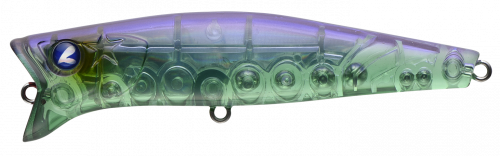
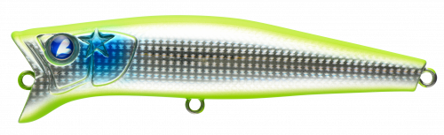
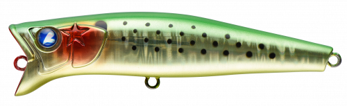
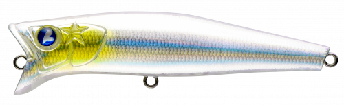

ガボッツ90
（GABOZ!!! 90）
ガボッツ90はBlueBlue（ブルーブルー）のスイミングポッパーです。
ポッパーでありながらミノーのアクションを突き詰めた、完全水面系のトップウォーター。ショートポッピングからロングダイブまでこなし、ただ巻きすれば水面で引き波を出しながら泳ぎます。ほとんど潜らないので、カキ瀬の上など根掛かりしやすい場所でも使えます。

画像出典:BlueBlue公式HP
スペック
- メーカー
- BlueBlue（ブルーブルー）
- タイプ
- スイミングポッパー（フローティング）
- 全長
- 90mm
- 自重
- 11g
- フック
- #6×2
- ターゲット
- シーバス・チヌ
- 価格
- 1,820円（税別）
▼今すぐチェック

ガボッツ90の特徴
ポッパーとミノーの要素を兼ね備え、常に水面で誘える
-
多彩なポッピングアクション
ショートポッピングからロングダイブまで自由自在。ロングダイブさせても潜るのは5cmほどで、泡と水のヨレをまとったまま誘えます。
-
巻けば水面で引き波
デッドスローからミディアムファーストまで、どの速度でも潜らずに水面で引き波を出しながらローリング。ポッパーなのにミノーのように巻いて使えます。
-
潜らないから根掛かり知らず
ほとんど潜らないので、シャローやカキ瀬の直上でも根掛かりを気にせず使えます。
ガボッツ90の使い方
基本はただ巻き。デッドスローで巻くと水面に引き波を立てながら泳ぎ、魚を水面へ誘い出します。
引き波でどこを泳いでいるか分からなくなったら、ポッピングを1発入れて位置を確認しつつアピール。反応が渋いときはポッピングとポーズを組み合わせて、水面で見せる時間を長くしましょう。
ガボッツ90の得意な状況
水面を意識したシーバスやチヌを狙うとき。シャローやカキ瀬の上、干潟など根掛かりが避けられない場所や、水が澄んでいて魚が見切りやすいときに向いています。
ワンポイント
同じシリーズには65・120・150もあります。チニングなど小さいベイトのときは65、シーバスの大型ベイトパターンでは120や150とサイズで使い分けましょう。
ガボッツシリーズの使い分け
| モデル | 全長／自重 | 得意な場面 |
|---|---|---|
| ガボッツ65 | 65mm／6g | チニングや小型ベイトに |
| ガボッツ90 | 90mm／11g | シーバス・チヌの両方に使いやすい基準サイズ（本記事のモデル） |
| ガボッツ120 | 120mm／23g | 大きめのベイトや遠投が必要なときに |
| ガボッツ150 | 150mm／42g | 大型ベイトパターンや大物狙いに |
ガボッツはどのサイズも水面でポッピングと引き波を使い分けられるスイミングポッパー。ベイトの大きさとターゲットで選びましょう。
人気カラー
公式ラインナップから4色を紹介します（カラー名は公式の表記のまま）。

#17 パープルウィニーパープル系の個性派カラー。朝夕のマズメや曇りの日に。

#23 ダブルチャートシルバーチャートとシルバーで目立つカラー。濁りや波っ気のあるときに。

#25 がつん！とキウイグリーン系のアピールカラー。チニングでも人気の目立つ色。

#29 スケスケサラシクリア系のカラー。澄み潮でスレた魚に見切られにくくしたいときに。
画像出典:BlueBlue公式HP
ガボッツ90に似ているルアー
-
 ポップクイーンS80
マリア
詳細はこちら＞
ポップクイーンS80
マリア
詳細はこちら＞
全長80mm・自重19gのシンキングポッパー。同じポッパーで、もっと遠くまで飛ばしたいときに。
-
 キリンジ90
メガバス
詳細はこちら＞
キリンジ90
メガバス
詳細はこちら＞
全長90mm・自重14.5gのウェイクベイト。同じサイズで、引き波をもっと強く出したいときに。
-
 シルバーウルフ ラフトリック90F
ダイワ
詳細はこちら＞
シルバーウルフ ラフトリック90F
ダイワ
詳細はこちら＞
全長90mm・自重13.5gのペンシルベイト。同じサイズの水面系で、ドッグウォークで見せたいときに。